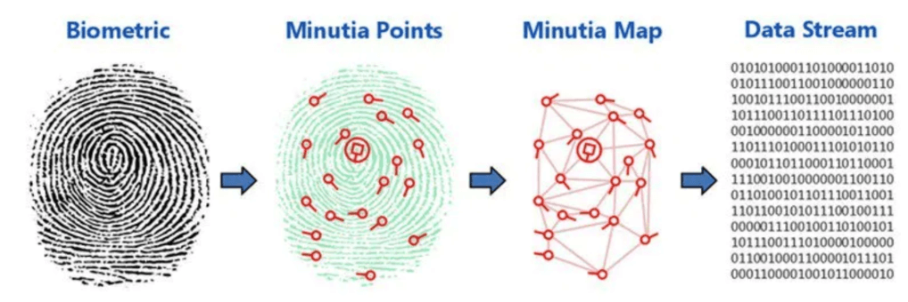
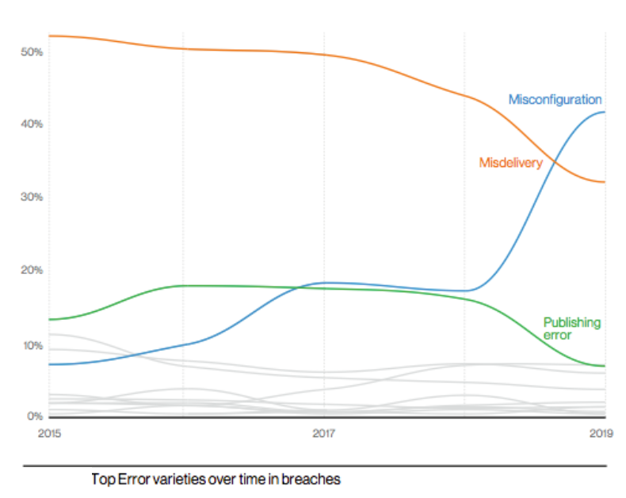

1.3.1 Scenario 1
Security breaches today are all too common, with attackers constantly finding new and innovative
ways of infiltrating organizations in search of valuable information.
1.3.1.1 Marriott Suffers Another Credential-Based Breach
The Story
On March 31, 2020, Marriott posted an announcement that "an unexpected amount of guest
information may have been accessed using the login credentials of two employees at a franchise
property." That "unexpected amount" turned out to be the data of 5.2 million guests.
This news is particularly unfortunate for Marriott since it's only been two years since it
discovered another massive breach, stemming from its acquisition of Starwood Hotels.
How the Breach Happened
We know that a hacker obtained the credentials of two employees at a Marriott property and used
them to siphon data for roughly a month before being discovered. We don't know how that hacker
obtained employee credentials, but credential stuffing and phishing are both likely culprits.
What Data Was Exposed
Help Net Security reports that the attacker accessed a wide range of personal data, including
contact information, personal details like gender and birthday, and linked account data like
airline loyalty programs.
The Lesson for Businesses
To protect customer data, you have to control how employees access data rigorously.
Marriott could have avoided this breach by implementing multi-factor authentication for
employees attempting to access sensitive data. That way, it would have taken more than a
password for the attacker to sneak into their systems.
In addition, Marriott could have gotten wise to the hacker's presence much sooner if their IAM
system had monitored for suspicious behavior. Such a system would have flagged the situation
—two employees at a franchise location accessing millions of guest records— as an anomaly that
merited investigation.
1.3.1.2 Slickwraps and the Case of the "White Hat" Hacker
The Story
Slickwraps, a company that lets users design custom skins for their electronics, was embroiled
in a data breach story The Verge called "comically bad." The breach started when someone claimed
to be a "white hat" hacker who tried to alert the company about its "abysmal cybersecurity".
Unfortunately, Slickwraps ignored them, so the hacker published a now-deleted Medium post about
the experience. A second hacker read this post and exploited Slickwraps' vulnerability, hacking
the company. In a particularly egregious touch, the hacker then emailed all the customers to
notify them that their data had been compromised.
How the Breach Happened
The company's phone customization tool was vulnerable to remote code execution. Users needed to
be able to upload their custom photos, but Slickwraps let them upload any file to the highest
directory on the server. So this hacker uploaded a file that allowed them to achieve remote code
execution and execute shell commands. (In the Medium post, the hacker called this "akin to
obtaining a skeleton key").
What Data Was Exposed
Per the original hacker, the vulnerability gave them nearly free rein over Slickwraps' systems,
including access to customer photos, billing and shipping addresses, admin account details, and
the resumes of all employees.
The Lesson for Businesses
Get an independent security audit.
If someone points out a vulnerability, listen to them.
1.3.1.3 Antheus Tecnologia Biometric Data Breach
The Story
In March 2020, SafetyDetectives — a pro bono team of security researchers — revealed a breach in
the data of Antheus Tecnologia, a Brazilian biometric solutions company. The company had left
sensitive information, including data on 76,000 fingerprints, exposed on an unsecured server.
The server didn't store direct scans of fingerprints, but binary code that hackers could use to
recreate them, with potentially disastrous consequences.

How the Breach Happened
As we mentioned, the company neglected to password protect a database on the cloud or properly
encrypt it. This is almost certainly the result of human error on the part of IT staff.
What Data Was Exposed
Per Biometric Update: "The vulnerable server contained roughly 16 gigabytes of data, with 81.5
million records also including administrator login information, employee telephone numbers,
email addresses, and company emails".
Antheus Tecnologia responded to the report by insisting that the exposed fingerprints belonged
to their team or were in the public domain. However, they also claimed that the data was hashed,
which was not the case.
The Lesson for Businesses
Password protect all sensitive data when migrating to the cloud and apply the same controls
you would apply on-premises.
Some of the worst data breaches on this list result from misconfiguration errors when
transitioning to the cloud. According to Verizon's 2020 Data Breach Report, errors are now the
second most common source of breaches, ahead of malware and only behind the hacking. In
particular, misconfiguration errors have dramatically increased since 2017, though the
researchers acknowledge this is mostly due to "internet-exposed storage discovered by security
researchers and unrelated third parties".

1.3.4 What Exploits?
What exploits did the hackers use in this case to gain access to valuable personal information?
Select the correct answer.
Weaknesses in the platform’s security practices
true
Bypassing the platform’s access control methods
false
Taking advantage of student information not being correctly validated on the platform
false
Extracting information when the volume of student data exceeds the storage capacity of the
platform’s memory buffer
false
Hackers are targeting the increasing numbers of organizations who are migrating to the cloud or
using cloud-based services and resources.
In this scenario, hackers were able to take advantage of an organization’s poor security practices.
Unsecured cloud databases left exposed on the Internet present a huge vulnerability and one that
attackers will seek to exploit to gain easy access to valuable organizational data.
1.3.4.1 The Top 4 Hacker Mindset Characteristics
In The Secret History of Hacking, they spend a lot of time talking about how hackers “think
differently” from other people. Given the big red button example, I would say I agree, but
neuroscience has taught us a lot about brain plasticity since that documentary was made. Even if
you don’t naturally lean towards hacking, I think there’s a case to be made that computers have
taught people to push buttons to find answers. These characteristics can be found in many
professions: many athletes, artists, and business leaders rely on the same four.
Curiosity:
If I had to pick only one characteristic, curiosity could probably be expanded to include the
other three. But anyone engaged in ethical hacking or “hackerlike” behavior is curious about how
things work. If they push the red button, what happens? If they send just the right packet, can
they break into the system? If they ask the right set of questions when they call the front
desk, can they get an executive’s email address?
Creativity:
Different people define creativity differently. For me, it’s about how you approach a problem.
For example, I typically don’t want access to the code base when I’m helping test an app or
platform. I want to come at it the way the user might encounter it in the wild. This constraint
increases my ability to come up with interesting approaches, forcing creativity, where knowing
the code base or architecture gives me far too many options but is useful. Constraints help
force creativity.
Respect for diversity of thought:
The internet is not the work of one person. I know that may seem obvious, but thousands of minds
(maybe hundreds of thousands) make all the apps and sites we use to get food, learn, access
healthcare, and make sure we have enough funds to shop at our favorite retail sites. As I
mentioned earlier, the internet was born to share information; we can describe security and
privacy as being “bolted on.” All those minds all over the world are doing things in different
ways at the same time; bad actors are also all over the world figuring out ever-evolving
attacks. It just doesn’t make sense to put together a security team of people who come from the
same background, went to the same college to study with the same teachers, and end up listening
to the same music and sharing the same meme content. Different people come at problems
differently. This makes diverse teams more effective at securing sites, winning DEF CON black
badges (more on that in the next section), and really doing anything —and there’s recent
research that says diversity of thought even helped teams do better during the pandemic.
Tenacious:
Ethical hackers and malicious actors strongly share the characteristic of stubbornly not giving
up. Neither of us is going to have a look at your app, click the mouse a few times, and decide
we can’t break into it. Code is written by humans, so it’s fallible. That means sooner or later;
we will come up with a vulnerability. An ethical hacker may have been hired to do this for a
company or may be operating independently, in which case it’s good to help ethical hackers know
how to reach your security team. Like I said, I am stubborn. When I was operating independently,
I wouldn’t stop at not being able to easily reach your security team for a serious issue. I
would have reached out to your sales team. Tell the sales people there’s a problem with the
security of their product, and you’ll get a response. They’re tenacious, too.
The Hacker Mindset
1.3.7 Find out More
Search for a few other examples of security breaches. Document your findings.
-
Incident date
-
Affected organization
-
What was taken?
-
What exploits were used?
-
How to prevent this security breach?
-
Reference source
1.3.7.1 LiveJournal Data Breach Comes Back to Haunt Users
The Story
Back in the early days of blogging, millions of people took to LiveJournal to air their secrets,
form communities, and write reams of fanfic. In May, many of those users had an unpleasant shock
when Bleeping Computer reported that hackers were passing around a database containing 26
million login credentials.
The most damning part of this story is that rumors about this leak had been circulating since
2014. LiveJournal has still not publicly acknowledged the breach. That left users vulnerable,
and Threatpost reports that hackers have been using the information for both credential stuffing
and targeted email-based extortion.
How the Breach Happened
We don't know how hackers got access to this database.
What Data Was Exposed
The database contains email addresses, user names, and unencrypted passwords. Typically, this
type of data would only have value as a tool to enable further credential stuffing attacks.
However, blogging's highly personal nature means that hackers can use private drafts and
messages for blackmail.
The Lesson for Businesses
Your old data practices can come back to haunt you.
Storing plaintext passwords, as LiveJournal seems to have done, is a big no-no, and they should
have changed their policies to keep up with best practices.
The second lesson is even more fundamental. Mistakes happen. But in the event of a breach,
inform your users so they can protect their identities. How you handle a breach will be critical
to navigating the incident and regaining customer trust.
The third lesson is foundational. Invest in experienced cybersecurity personnel. Even if you
spend your max dollars on cybersecurity and check all the necessary boxes, you still need smart
people to make sure it can all work together — and who knows what to do when it doesn't.
1.3.7.2 LifeLabs Breach Exposes Almost Half of Canada
The Story
In October 2019, Canadian medical testing company LifeLabs was hacked in the biggest data breach
in Canadian history. (This data breach story technically came to light in December 2019, but the
scandal deepened in the new year, so it still makes a list.)
The breach exposed the data of 15 million Canadians — 40% of the country's population. The
company claimed that they paid to retrieve the data, but that still leaves the strong
possibility that the hacker copied it. In the wake of this news, three parties filed
class-action lawsuits against LifeLabs, the largest of which is for over $1 billion.
In an unfortunate coda, LifeLabs attempted to make amends by offering a year of free credit
monitoring to victims. However, many Canadian customers took issue with the program, since it
was operated by TransUnion, which was the victim of a recent breach.
How the Breach Happened
According to CPO Magazine, the language used in one of the lawsuits offers clues about how the
breach occurred. "It alleges that the data in question was stored on unsecured servers and not
encrypted. It also alleges that the network security personnel responsible for securing the data
were not properly trained and that there was not enough staff."
What Data Was Exposed
Hackers compromised lab test results and national health card numbers, which revealed names,
birthdates, addresses, login IDs, and passwords.
The Lesson for Businesses
Healthcare organizations need to invest more in cybersecurity and protect patient data to
protect their overall health.
1.3.7.3 Wishbone Data Breach Puts Young Users at Risk
The Story
Wishbone is a popular social app, especially among young teens. In May, cybersecurity
researchers discovered that hackers were selling a database with over 40 million user records on
the dark web. This incident is particularly troubling given the young age of many of Wishbone's
users and the apparent lack of appropriate safeguards for their data.
How the Breach Happened
As of yet, we don't know how the hackers gained access to the database. However,
BleepingComputer reports that the hacker group "Shiny Hunters" leaked the database. Shiny
Hunters have been responsible for numerous high-profile breaches, though it's unclear if they
committed this breach or are merely leaking the data.
What Data Was Exposed
Researchers at Cyble found that the leaked database contained a wide variety of sensitive data,
including names, email addresses, geolocation, gender, phone numbers, social media profiles, and
passwords.
Experts pointed out that the severity of the breach could have been limited if the data had been
appropriately encrypted. Wishbone used MD5 password hashing, which is considered weak.
The Lesson for Businesses
Securing your product takes more than buying the right firewall; it's about building a
security culture.
That work starts by classifying the sensitivity of your company's assets; then, you can
prioritize those to protect. Once you understand the value of your data, you can apply the
required degree of security control. In the case of Wishbone, minors' personal data is very
sensitive and should have been protected with a much stricter policy.
Remember, those data assets have real value to attackers, who are organized, motivated, and
continuously evolving.
Verizon's 2020 report found that organized criminal groups committed 55 % of breaches, and 86%
were financially motivated, knowing that any company that collects and deals in data must take
the threat seriously. Building a security culture means accounting for threats in every decision
you make about your company's data.
1.3.7.4 Nintendo Is the Latest Victim of Credential Stuffing in Media
The Story
In April 2020, Nintendo announced that 160,000 accounts had been breached in a presumptive
credential stuffing attack. Hackers had apparently been using the hijacked accounts to buy
coveted digital items.
As a result of the breach, Nintendo discontinued the practice of letting users log in with their
Nintendo Network ID (NNID). The company also recommended that users enable two-factor
authentication to protect their data.
Nintendo is only the most recent victim of credential stuffing attacks targeting digital media.
Netflix, Spotify, and Disney+ have all had similar issues in recent months and years.
How the Breach Happened
Nintendo said the compromised credentials were "obtained illegally by some means other than our
service." That strongly suggests that the affected users weren't using unique IDs and passwords.
So when their credentials were breached in another attack, hackers could use them to break into
their Nintendo accounts.
What Data Was Exposed
Once hackers gained access to Nintendo accounts, they could make purchases and view sensitive
data like email address, birth date, and country.
The Lesson for Businesses
Require multi-factor authentication. Your users will thank you in the long term.
1.3.7.5 Shocking Revelations From an Australian Football Data Breach
The Story
BigFooty.com is a popular app where fans of Australian football can chat about their favorite
sport (which is not to be confused with American or international sports, also called football).
But in late May, the public learned that this seemingly innocuous app had a dark side.
SafetyDetectives discovered 132GB of sensitive data published on an Elasticsearch database.
The exposed data included private messages, many of which contained racism, and other offensive
and damaging content. Furthermore, SafetyDetectives reported that many of these messages could
be traced to individual users, including "Australian police officers and government employees."
If malicious actors found the database, they could use this material to commit blackmail or
other forms of coercion.
SafetyDetectives contacted BigFooty's web host, Amazon Web Services, and the Australian Cyber
Security Centre, who quickly shut down the server. BigFooty later posted about the breach,
acknowledging that "there was some unwanted interaction by unauthorized people," but "we
currently do not believe that the whole index was downloaded."
How the Breach Happened
This is another case of a misconfigured database leaving sensitive information exposed on the
web.
What Data Was Exposed
Many of BigFooty's users weren't registered under their real names, and this may have given both
users and the site's admins the false notion that their behavior on the site was anonymous.
However, many users shared identifiable information via messages, such as their passwords for
live streams, phone numbers, email addresses, and personal information.
Furthermore, the breach also exposed IP addresses, and GPS data, so motivated hackers could
still trace information back to individuals and use shared passwords to take over more accounts.
The Lesson for Businesses
Identify your highest-risk data and exercise tight control over who can access it.
Storing private messages between users on your servers is like storing dynamite in your
basement. No one who lacks the appropriate training and oversight should be able to interact
with it. For businesses, comprehensive cybersecurity means controlling access to personal
information via centralized identity management.
1.3.7.6 CAM4 Exposes 10.88 Billion Records
The Story
This adult webcam platform inadvertently left a database full of extremely sensitive information
available on the web without password protection. Again, we have SafetyDetectives to thank for
finding the vulnerability and sounding the alarm before malicious actors could steal the data.
This data breach story shares some characteristics with the BigFooty leak, but there are some
important distinctions. One might assume that seven terabytes of private data leaked from a site
of this nature would do more damage than chats from a sports app. Still, there's no evidence any
malicious actors exploited the vulnerability.
Furthermore, CAM4 responded promptly and transparently to the breach, though they did claim that
only a tiny fraction of the exposed records could have been traced to specific individuals.
What Data Was Exposed
The types of personally identifiable information exposed in this breach are quite alarming,
including full names, email addresses, sexual orientation, and chats. SafetyDetectives reported
finding 11 million records, including emails, which allowed their team to divide affected users
by country.
The Lesson for Businesses
Conduct a data audit to understand where all your data lives and how it is protected.
According to Kevin Krieg, technical director of the company which manages CAM4's database: "It's
a server that should not have an outward facing IP in the first place." This is a common mistake
and why having an asset inventory is in the CIS Top 20.
You could also understand your attack surface the best you can, what does your company publicly
expose? What will an attacker find if they start researching you? Some tools will help you mine
OSINT, or you can also have an external red team penetration test from a third party.
1.3.7.7 ExecuPharm Data Stolen and Published in a Ransomware Attack
The Story
On March 13, hackers with the CLOP ransomware group launched a ransomware attack against
ExecuPharm, a pharmaceutical research company.
Once inside, the hackers encrypted the data on the affected servers and demanded a ransom to
decrypt it. Not only that, but they also threatened to publish the stolen data on the dark web
if they weren't paid. In April, it appears CLOP made good on this threat. TechCrunch reported
that they found "a vast cache of data, including thousands of emails, financial and accounting
records, user documents, and database backups, stolen from ExecuPharm's systems."
Despite the threats, ExecuPharm's response to the attack has been laudable. They informed
Vermont's attorney general of the breach in April and worked hard to improve security. The
company reports that they hired third-party security firms to advise them, instituted "forced
password resets, multi-factor authentication for remote access, and endpoint protection,
detection, and response tools."
How the Breach Happened
According to CISO MAG, the hackers gained access to ExecuPharm via a phishing campaign targeted
at ExecuPharm employees.
What Data Was Exposed
In ExecuPharm's letter to the Vermont AG, they disclosed that the hackers could have accessed
employee files containing personal information ranging from social security numbers to bank and
credit card numbers.
The Lesson for Businesses
Lesson one: Take employee cybersecurity training seriously to guard against phishing
attacks.
Sending out periodic reminders not to click on suspicious links isn't enough.
Lesson two: The data breach is only half the story. Your company's response is the other
half.
ExecuPharm did everything right in handling this breach. They contacted the authorities,
immediately improved their security protocols, and refused to play ball with hackers. The result
is that, while ExecuPharm may experience some financial damage from this hack, the reputational
fallout will be limited.
1.3.7.8 EasyJet Customers Hit Hard
The Story
In May 2020, low-cost airline EasyJet revealed that a "highly-sophisticated attacker" stole 9
million customers' personal data. In response, law firm PGMBM filed a class action lawsuit under
the GDPR for £18bn. EasyJet has faced intense criticism for failing to protect data and for
waiting several months to inform customers of the breach. However, legal observers predict that
the company will face a lighter fine since the airline industry is already struggling to survive
during the Coronavirus pandemic.
How the Breach Happened
EasyJet has not released any details about how its systems were breached, except to say that the
hacker(s) seemed to be after the company's intellectual property, as opposed to its customer's
personal data.
What Data Was Exposed
There were two classes of victims in the EasyJet breach. The first was the 9 million customers
whose email addresses, names, and travel records were exposed. These customers may now be
vulnerable to phishing attacks, and possibly more aggressive targeted attacks based on their
travel history.
In addition, roughly 2,200 customers had their credit card details exposed, including the
three-digit CVV code on the backs of their cards, which could expose them to theft.
The Lesson for Businesses
Anticipate public perception.
EasyJet learned of the attack in January and informed the Information Commissioner's Office
(ICO) as required, but didn't tell their customers for four months. Even if EasyJetupheld its
legal responsibility and the company is correct that the hacker wasn't interested in customer
data, they still damaged their customers' trust by waiting so long to go public.
The 11 Biggest Data Breaches of 2020 (So Far)
The Worst Data Breaches of 2021 (Q1 and Q2)
The 9 Most Common Security Threats to Mobile Devices in 2021